Handouts
- This document is generated automatically and contains all lecture slides.
- When modifications are made to any of the lecture slides, this should be reflected here automatically.
- If you are viewing the HTML version of the handouts, a static PDF might also be downloaded by clicking
Other formats > Typstin the right side menu of the page. - If you are reading the PDF version of the document, the HTML version is availble here
Those handouts where last modified: 2026-02-23.
Separate handouts for each lecture
EL1: Intro
- (Nguyen 2022, ch. 1)
- (Ludvigsson et al. 2009)
- (Laugesen et al. 2021)
Important aspects
- Data (where does is come from, what does it contain)
- Ethics and legal (how to handle sensitive data, what laws and regulations apply)
- Project management (how to plan and execute a data project, version control, reproducibility, R specific packages for efficient data handling)
Data – what is it?
EU Data Act | Article 2, Definitions:
For the purposes of this Regulation, the following definitions apply:
- ‘data’ means any digital representation of acts, facts or information and any compilation of such acts, facts or information, including in the form of sound, visual or audio-visual recording;
- ‘metadata’ means a structured description of the contents or the use of data facilitating the discovery or use of that data;
- ‘personal data’ means personal data as defined in Article 4, point (1), of Regulation (EU) 2016/679;
- ‘non-personal data’ means data other than personal data;
Course structure
- Lectures on different data sources/registers
- 🧑💻 Exercises on data management and analysis
- R with some additional tools (Git, GitHub, targets, data.table)
- A data project with written report and presentation
- Final exam 😱
- Instruction web page in addition to Canvas
- Litterature: accassible through GU library (O’Reilly Learning for Higher Education) or otherwise shared (no need to purchase books)
Different types of data
- 🩻 Images
- Statistical image analysis
- 🧪 Lab samples
- 📝 Unstructured medical records
- Natural Language Processing
- 📺 Sensor data
- Time series (“big data”)
- 💻 EHRs (electronic health records)
- Structured but hierarchical rather than tabular
- 💻 Structured medical records
- tabular data
Usages
- 👩🏼🔬 Research
- 📒 Quality control/improvement
- 🔖 Administration/reporting
- 📰 News coverage
- 🧑💻 Building prediction models and tools
Register data
Three types of health care registers:
- Administrative registers
- Health care registers
- Quality registers
💶 Administrative data
(As found in all types of registers)
- Billing codes
- Direct (what something actually cost)
- Estimated (DRG codes for different types of procedures)
- Claims data
- Primary for reimbursment (insurense company or other payer)
- Secondarily for Health economy/epidemiology
- How to contact patients, health care providers etc
- Dates and times for visits, procedures etc
🏥 Hospital background data
- hospital characteristics
- staffing
- resources
- geographical area
- level of specialization
- private, public
🩺 Clinical data
- health care registers
- Mandatory (by law)
- eg: National patient register, cancer register (diagnoses)
- quality registers
- Optional for health care providers
- (Mandatory within organisations joining)
- conditions (diabetes, cancer, etc)
- procedures (total hip arthroplasty)
- Diagnoses, treatments, helth status, questionaires (PROM/PREM)
🤓 Individual background data
- socioeconomic data
- education
- income
- occupation
- family relations
- migration status
- Mortality data
- date of death
- cause of death
🗺️ Aggregated data
“Micro” vs. “macro” data.
- population data
- neighborhood characteristics
- pollution
- crime rates
Inclusion/exclusion criteria
👍 Defines the target study/register population
👎 Define exceptions to the general rules
🦿Simple example
“Every Swedish resident who had total hip arthroplasty performed in Sweden”
- Include: all ages, all hospitals, all reasons for the prothesis, all types of prosthesis
- Exclude: Swedish residents with surgery performed in other countries. Non-Swedish residents with the procedure performed in Sweden.
🥴 Complicated example
The National Quality Register for Ovarian Cancer
- Inclusion
- Epithelial borderline tumours of the ovary
- Topography code according to ICD-O/2: C56.9.
- Morphology code according to ICD-O/2 ≥80103 and <85900.
- Borderline tumours with 5th digit 3 in the morphology code according to ICD-O/2 and benign behaviour flag = 3.
- Epithelial ovarian cancer:
- Topography code according to ICD-O/2: C56.9.
- Morphology code according to ICD-O/2 ≥80103 and <85900.
- Malignant tumours with 5th digit 3 in the morphology code according to ICD-O/2 and benign behaviour flag blank.
- Non-epithelial ovarian cancer:
- Topography code according to ICD-O/2: C56.9.
- Morphology code according to ICD-O/2 ≥85903 and <95900, with the exception of mesotheliomas with ICD-O/2 codes in the interval ≥90500 and <90600.
- Malignant tumours with digit 3 as the fifth digit in the morphology code according to ICD-O/2.
- Exception for granulosa cell tumours, where all cases with morphology codes according to ICD-O/2 in the interval ≥86200 and ≤86223 are included.
- Malignant tumours of the fallopian tube:
- Topography code according to ICD-O/2: C57.0.
- Morphology code according to ICD-O/2 ≥80003 and <95900, with the exception of mesotheliomas with ICD-O/2 codes in the interval ≥90500 and <90600.
- Malignant tumours with digit 3 as the fifth digit in the morphology code according to ICD-O/2.
- Epithelial borderline tumours of the ovary
- Exclusion
- Epithelial ovarian cancer and borderline tumours of the ovary
Cases with behaviour codes 0, 1, 2, 6, or 9 as the fifth digit in the ICD-O/2 morphology code are excluded.
Morphology codes according to ICD-O/2 <80103 and ≥85900 are excluded. - Non-epithelial ovarian cancer
Cases with digits 0, 1, 2, 6, or 9 as the fifth digit in the ICD-O/2 morphology code are excluded, with the exception of granulosa cell tumours, for which cases with ICD-O/2 morphology codes in the interval ≥86200 and ≤86223 are included even when the final digit is 0, 1, 2, or 3.
Morphology codes according to ICD-O/2 <85903, as well as codes in the intervals ≥90500 and <90600 (mesotheliomas) and ≥95900, are excluded. - Tumours of the fallopian tube
Cases with behaviour codes 0, 1, 2, 6, or 9 as the fifth digit in the ICD-O/2 morphology code are excluded.
Morphology codes according to ICD-O/2 in the intervals ≥90500 and <90600 (mesotheliomas) and ≥95900 are excluded. - For all diagnoses, cases are excluded if the diagnosis is based solely on:
- clinical examination (basis of diagnosis 1),
- imaging procedures including radiography, scintigraphy, ultrasound, MRI, CT (or equivalent examinations) (basis of diagnosis 2),
- autopsy with or without histopathological examination (basis of diagnosis 4 or 7),
- surgery without histopathological examination (basis of diagnosis 6), or
- other laboratory investigations (basis of diagnosis 8).
- cases with age <18 years are excluded.
- Epithelial ovarian cancer and borderline tumours of the ovary
Coverage and completeness
- 🏥 Institutional coverage: proportion of all eligible units/clinics that are connected to the registry
- e.g., 90% of hospitals performing the procedure are connected
- Should be known by the “register holder”
- 🤒 Case coverage: proportion of patients who should have been reported from connected units that are actually included
- e.g., 85% of eligible patients registered
- The aim is to use 100 % but this is not always possible
- Data completeness: proportion of required data fields that are filled in for the registered patients
- 🚬 e.g., 95% of patients have smoking status recorded
- 🩸 e.g., 80% of patients have blood pressure data available
- 🚬 e.g., 95% of patients have smoking status recorded
What is recorded?
- 👩🏻⚖️ Some registers are mandated by law and regulations
- Quality registers often have a steering committee and register holder
- Reseasrh initiated databases according to specific protocols
Data linking
- Unique personal identifier
- Not in every country!
- Social security number similair purpose but not as widely used
- study specific id number
- HSA (“Hälso- och sjukvårdens adressregister” for staff and organisations)
Unique personal identifier
(Swedish: personnummer, reading: (Ludvigsson et al. 2009))
121212-1212 Tolvan Tolvansson
- 10 (or 12) digits
- date of birth-4 digits
- assigned at birth or immigration
- used in all health care contacts
- used for all administrative data
- sometimes reused after death
- sometimes changed (uncommon)
- sometimes inclusion criteria for register
- similair in the Nordic countries
- Denmark: CPR number
- Norway: Fødselsnummer
- Finland: Henkilötunnus
- Iceland: Kennitala
Combining data
- Similar registries in different areas/regions/countries
- Different individuals but similar data
- Same definitions and variables?
- Same inclusion criteria?
- Don’t get fooled by similar names!
- Differences and similarities within the Nordic countries (Laugesen et al. 2021)
Working with health care data
A lot to do before the statistical analysis!
- Legalities
- Do I have the right to access this data?
- What am I allowed to do?
- What am I not allaowed to do?
- Data management
- large datasets
- multiple datasets
- different formats
- missing data
- data cleaning
- data transformation
- data wrangling
- data munging
- data governance
- data engineering
- Planning
- What is the purpose?
- How can I achieve my goals?
- What if I change my plans later?
- Can I redo my analysis?
- How do I present/communicate my results?
R as a tool but …
- Large files often comes exported from SAS (initially “Statistical Analysis System”)
- Comma-Separated Values (csv) or text files
- Application Programming Interface (API) calls
- Structured Query Language (SQL) databases
- Hierarchical data structures (eXtensible Markup Language, XML; JavaScript Object Notation, JSON, …)
Our use of R
{data.table}to handle large data sets efficiently{targets}to streamline a reproducible pipelineGitfor version controlGitHubfor colaborationQuartofor reporting
EL2: European legislation
- (Vukovic et al. 2022)
- (Nguyen 2022, ch. 4)
Legal part
- Today: European legislation (mainly GDPR!)
- Lecture handouts main sourse for examination (seminair ES1 and possibly DISA exam).
- Article (Vukovic et al. 2022). Focus on the introduction, the section “GDPR‐related enablers and barriers to cross‐country health data exchange in Europe” (in the results section incl. figures and tables), discussion and conclusions. Examined as part of seminair ES1 (not the DISA exam).
- Next lecture: Swedish legislation (including associated reading). Examined as part of seminair ES1 (not the DISA exam).
- Consequence: (Nguyen 2022, ch. 4). Read the beginning. Skip “Medical Information Mart for Intensive Care”. Read the “Synthea” section. The “Synthea” section does not have a legal focus but the legal parts explains why we use this data. Read for your own understanding (not examied).
European legislation
- GDPR (our focus)
- Defines the legal conditions for processing personal data
- Focuses on protection, safeguards, and accountability
- European Health Data Space (EHDS)
- Establishes a European framework for access to health data for research, statistics, and policy.
- Focuses on data access, governance, and interoperability
- Increases opportunities for cross-national health statistics
- EU Data Act
- Regulates who may access data and under what conditions, across sectors.
- Indirectly relevant for health statistics through device-generated and digital service data.
Legal and governance frameworks enable access to data, but statistical expertise remains essential for ensuring data quality, valid inference, and meaningful interpretation.
EU law vs Swedish law
- EU legislation tends to be more detailed in the legal text itself
- This is because EU law must be:
- applied uniformly across many different legal systems
- interpreted without relying on national preparatory works
- Interpretation of EU law relies mainly on:
- the wording of the legislation
- recitals (non-binding explanaitions before the articles describing the purpose and context).
- Swedish legislation is often:
- shorter and less detailed in the statutory text
- supplemented by extensive preparatory works (förarbeten)
- In Sweden, preparatory works are a central interpretative source for courts and authorities
➡️ The difference reflects different legislative techniques, not necessarily a difference in regulatory ambition.
The GDPR is available in all official EU languages via EUR-Lex. Take a quick look to get a very brief overview. However, it is recommended reading only if you suffer from insomnia — it is not required for fulfilling the course requirements!
GDPR
- Regulation (EU) 2016/679 (GDPR)
- Enforced since May 25, 2018
- Regulates the processing of personal data
- Aims to protect the privacy and rights of individuals
- Sets out rules for data controllers and processors
European Union (EU)
- GDPR applies directly and uniformly as law
- No national implementation required
- Member States may:
- introduce supplementary legislation
- allow legal exceptions, e.g. for:
- research
- public interest
- health data
European Economic Area (EEA)
Countries: Norway, Iceland and Liechtenstein
- GDPR applies via the EEA Agreement
- Implemented into national law
- In practice:
- very similar application as within the EU
- same core principles, rights, and obligations
United Kingdom (UK)
- EU GDPR no longer applies directly after Brexit
- Replaced by:
- UK GDPR
- Data Protection Act 2018
Switzerland
- Not part of EU or EEA
- GDPR does not apply as law
- Instead: Federal Act on Data Protection (FADP)
- Revised to align closely with GDPR
International laws
- Note that other countries have different laws and regulations
- In USA, for example, HIPAA regulates the use and disclosure of protected health information (PHI)
- Different states have different laws as well
- When collaborating internationally, compliance with all relevant laws is required
Definitions
GDPR article 4:
- Personal data
- means any information relating to an identified or identifiable natural person (data subject); an identifiable natural person is one who can be identified, directly or indirectly, in particular by reference to an identifier such as a name, an identification number, location data, an online identifier or to one or more factors specific to the physical, physiological, genetic, mental, economic, cultural or social identity of that natural person.
- Processing
- means any operation or set of operations which is performed on personal data or on sets of personal data, whether or not by automated means, such as collection, recording, organisation, structuring, storage, adaptation or alteration, retrieval, consultation, use, disclosure by transmission, dissemination or otherwise making available, alignment or combination, restriction, erasure or destruction;
- Pseudonymisation
- means the processing of personal data in such a manner that the personal data can no longer be attributed to a specific data subject without the use of additional information, provided that such additional information is kept separately and is subject to technical and organisational measures to ensure that the personal data are not attributed to an identified or identifiable natural person;
- Controller
- means the natural or legal person, public authority, agency or other body which, alone or jointly with others, determines the purposes and means of the processing of personal data […]
- Processor
- means a natural or legal person, public authority, agency or other body which processes personal data on behalf of the controller;
- Consent of the data subject
- means any freely given, specific, informed and unambiguous indication of the data subject’s wishes by which he or she, by a statement or by a clear affirmative action, signifies agreement to the processing of personal data relating to him or her;
- Personal data breach
- means a breach of security leading to the accidental or unlawful destruction, loss, alteration, unauthorised disclosure of, or access to, personal data transmitted, stored or otherwise processed;
- Data concerning health
- means personal data related to the physical or mental health of a natural person, including the provision of health care services, which reveal information about his or her health status;
Legal grounds for processing personal data:
GDPR article 6 (1):
Processing shall be lawful only if and to the extent that at least one of the following applies:
- the data subject has given consent to the processing of his or her personal data for one or more specific purposes;
processing is necessary for the performance of a contract to which the data subject is party or in order to take steps at the request of the data subject prior to entering into a contract; processing is necessary for compliance with a legal obligation to which the controller is subject;processing is necessary in order to protect the vital interests of the data subject or of another natural person;- processing is necessary for the performance of a task carried out in the public interest or in the exercise of official authority vested in the controller;
- processing is necessary for the purposes of the legitimate interests pursued by the controller or by a third party, except where such interests are overridden by the interests or fundamental rights and freedoms of the data subject which require protection of personal data, in particular where the data subject is a child.
processing is necessary for compliance with a legal obligation to which the controller is subject under Union or Member State law requiring the processing of personal data for a specific purpose.
Legal ground (d) is the most relevant if you work iwith secondary data in the public sector (research and reporting etc). (a) is relevant to collect primary data for research etc. (e) is a delicate one …
Processing of special categories of personal data
GDPR Article 9 (1):
Processing of personal data revealing racial or ethnic origin, political opinions, religious or philosophical beliefs, or trade union membership, and the processing of genetic data, biometric data for the purpose of uniquely identifying a natural person, data concerning health or data concerning a natural person’s sex life or sexual orientation shall be prohibited. 😱
But …
Paragraph 1 shall not apply if one of the following applies:
- the data subject has given explicit consent to the processing of those personal data for one or more specified purposes […]
- processing is necessary for reasons of public interest in the area of public health, such as protecting against serious cross-border threats to health or ensuring high standards of quality and safety of health care and of medicinal products or medical devices […]
- processing is necessary for archiving purposes in the public interest, scientific or historical research purposes or statistical purposes (🥳) in accordance with Article 89(1) based on Union or Member State law which shall be proportionate to the aim pursued, respect the essence of the right to data protection and provide for suitable and specific measures to safeguard the fundamental rights and the interests of the data subject.
Safeguards
GDPR article 89:
Safeguards and derogations relating to processing for archiving purposes in the public interest, scientific or historical research purposes or statistical purposes
Processing for archiving purposes in the public interest, scientific or historical research purposes or statistical purposes, shall be subject to appropriate safeguards, in accordance with this Regulation, for the rights and freedoms of the data subject. Those safeguards shall ensure that technical and organisational measures are in place in particular in order to ensure respect for the principle of data minimisation. Those measures may include pseudonymisation provided that those purposes can be fulfilled in that manner. Where those purposes can be fulfilled by further processing which does not permit or no longer permits the identification of data subjects, those purposes shall be fulfilled in that manner.
Where personal data are processed for scientific or historical research purposes or statistical purposes, Union or Member State law may provide for derogations […] so far as such rights are likely to render impossible or seriously impair the achievement of the specific purposes, and such derogations are necessary for the fulfilment of those purposes.
Technical Safeguards
Examples of technical safeguards include:
- Pseudonymisation
- Encryption of personal data
- Access controls and authentication
- Logging and monitoring of access
- Secure storage and transmission
- Use of secure software environments often enforced by organizational standards
Organisational Safeguards
Examples of organisational safeguards include:
- Defined roles and responsibilities
- Internal policies and procedures
- Staff training and confidentiality obligations
- Data protection by design and by default
- Incident and breach response procedures
- Documentation and accountability measures
- Working for a health care organization might require an agreement of secrecy
Data Minimisation and Purpose Limitation
- Only data that are necessary should be processed
- Data are processed only for specified purposes
- Access is limited to authorised personnel
- Retention periods are defined and respected
Pseudonymisation and Anonymisation
- Pseudonymisation reduces risks while allowing reuse of the data
- Identifiers are kept separately and protected
- Anonymisation removes data from GDPR scope (if irreversible)
- Pseudonymisation \(\neq\) Anonymisation
- Removing the Swedish personal identification number (PIN) is not a guarantee for pseudonymisation
Data Controller
- The entity that determines the purposes and means of the processing of personal data
- Bears the primary legal responsibility
- Responsible for:
- Lawful basis
- Compliance with GDPR principles
- Transparency and information to data subjects
- Appropriate technical and organisational measures
- Typical examples:
- Public authorities
- Universities
- Regions and municipalities
Data Processor (PUB) under GDPR
- Processes personal data on behalf of the controller
- Acts only on documented instructions from the controller
- May not determine purposes of processing
- Has direct responsibilities for:
- Security of processing (Article 32)
- Confidentiality
- Must be governed by a data processing agreement
Controller–Processor Relationship
- A formal Data Processing Agreement (DPA) is required
- The agreement must specify:
- Subject matter and duration
- Nature and purpose of processing
- Types of personal data
- Categories of data subjects (patients, students, citizens, …)
- Security measures
- The controller remains responsible even when processing is outsourced
Example: Sahlgrenska
- If a researcher work at the Sahlgrenska university hospital, VGR might be the data controller (personuppgiftsansvarig; PUA)
- If he/she asks for statistical consulting from the Sahlgrenska Academy, GU might be the data processor (personuppgiftsbiträde; PUB)
European Health Data Space (EHDS)
What is it?
- EHDS is an EU-wide legal and technical framework for the use and sharing of health data
- It aims to:
- improve access to health data across borders
- support healthcare, research, statistics, and policy-making
- Focuses on data access and governance
Two Main Pillars
- Primary use of health data
- Use of data for individual patient care
- Cross-border access to electronic health records
- Secondary use of health data for
- statistics
- scientific research
- public health
- policy evaluation and innovation
Implementation Timeline
- 2025: EHDS regulation enters into force
- 2025–2027: Development of implementing and technical acts
- From ~2029 onwards:
- national infrastructures become operational
- cross-border access for secondary use starts to function in practice
How EHDS Relates to GDPR
- EHDS does not replace GDPR
- GDPR continues to govern:
- personal data protection
- lawful bases
- safeguards for health data
- EHDS provides procedures and structures for lawful data access under GDPR
➡️ GDPR defines whether data may be processed
➡️ EHDS defines how data can be made available
Why EHDS Matters for Statisticians
- EHDS explicitly recognises statistics as a legitimate purpose
- It facilitates access to:
- large-scale health datasets
- cross-national data sources
- It increases demand for:
- data quality assessment
- metadata interpretation
- harmonisation and comparability analyses
EHDS Does Not Do This
- EHDS does not:
- define statistical methods
- ensure data quality automatically
- guarantee comparability across countries
- Legal and technical access ≠ valid statistical inference
EU Data Act
What Is It?
- The Data Act is an EU regulation on access to and sharing of data
- Focuses mainly on:
- data generated by connected products and digital services (IoT)
- business-to-business (B2B) and business-to-government (B2G) data sharing
- It is not a data protection regulation
➡️ The Data Act is about who may access data and under what conditions.
How the Data Act Relates to Health Data
- The Data Act does not primarily target health registers
- However, it may affect:
- data generated by medical devices
- digital health services
- health-related IoT data
➡️ Health data may fall under the Data Act depending on how it is generated.
EL3: Swedish legislation
- [“Public Access and Secrecy | Swedish National Data Service” (2025), (Görman 2024)
- (“Public Access and Secrecy | Swedish National Data Service” 2025)
- (Görman 2024)
Literature
The Swedish legal system will only be examined during the seminair ES1 (not in the DISA exam). You are allowed to use the sources during the seminair (no need to memorize individual laws and paragraphs by names and numbers). Nevertheless, read the literature before the seminair!
Lecture handouts
Web link (“Public Access and Secrecy | Swedish National Data Service” 2025)
Report (Görman 2024). Most important: p. 26-32, 42-45, 49 and 75-90.
Swedish reading students might enjoy lagen.nu for source material (however, this is not required for the course).
- A translation using Google translate might be used for non Swedish reading students. However, please note that legal texts are formally valid only in their original language.
Swedish legal system
Backgrund to Swedish law
- Fundamental laws (“grundlagar”) decided by the parliament but stable over time
- Asort of codified constitution distributed in four parts
- The Freedom of the Press Act (Tryckfrihetsförordningen) of relevance
- Ordinary laws (parliament)
- New ones all the time (previously twice a year)
- New laws to update existing laws
- Published in Svensk författningsamling, SFS
- Digitally since 2018-04-01 (previously printed)
- The “big blue book” is only a smaller collection of important laws
- ordinances (“förordning”) from the goverment to implement laws
- regulations (“föreskrifter”) from authorities to implement laws and ordinances
Two main branches of law
- Civil and criminal law:
- state what you can not do (everything else is “legal”)
- Handled by ordinary courts
- Ex: Brottsbalken kap 20 om tjänstefel m.m. (The Swedish Penal Code (Brottsbalken), Chapter 20 — Offences Relating to Public Office.)
- Public law: relationship between individuals and the state etc
- state what the public authorities must and can do (everything else is “illegal”)
- Handled by administrative courts
- What we mostly care of here
Private actors are generally free unless restricted by law, while public authorities require explicit legal authority to act.
Fundamental law
The Freedom of the Press Act (TF)
(🇸🇪: Tryckfrihetsförordningen)
- World’s oldest freedom of the press law (since 1766)
- Chapter 2: Public access to official documents
- Applies to public authorities and institutions
- Including health care registers and medical records held by public authorities
In order to promote a free exchange of opinion, comprehensive and pluralistic information, and free artistic creation, everyone shall have the right of access to official documents. [TF 2.1]
But there are exceptions (TF 2.2): - e.g., if disclosure would violate privacy or national security - if so, the goverment has the right to provide ordinary laws that restrict access (which they do!)
Confidentiality
The Public Access to Information and Secrecy Act (OSL)
(🇸🇪: Offentlighets- och sekretesslagen)
- Law that regulates public access to official documents and confidentiality
- Applies to public authorities and institutions
- Defines what information is considered confidential and under what circumstances
OSL Chap 21
Confidentiality for private individuals’ personal circumstances no mather the context
- E.g., health data, economic circumstances, family relations
OFS 21.1: Secrecy applies to information concerning an individual’s health or sexual life, such as information about illnesses, substance abuse, sexual orientation, gender reassignment, sexual offences, or other similar information, if it can be assumed that disclosure of the information would cause significant harm to the individual or to someone closely related to them.
OSL Chap 24
Secrecy for the protection of individuals in research and statistics.
- A few special research databases etc
- Some regulations for research ethics boards
OSL Chapter 25
Secrecy for the protection of individuals in activities relating to health and medical care etc.
OFS 25.1: Within the health and medical care services, secrecy applies to information concerning an individual’s state of health or other personal circumstances, unless it is clear that the information may be disclosed without causing harm to the individual or to someone closely related to them. The same applies to other medical activities, such as forensic medical and forensic psychiatric examinations, insemination, in vitro fertilisation, abortion, sterilisation, circumcision, and measures to prevent communicable diseases.
- Exceptions exists,
- for example to submit medical patient data to quality registers
- to share data between public organisations for research purposes or statistics (OFS 25.11 p. 5).
OSL Chapter 10
Provisions on disclosure overriding secrecy and provisions on exemptions from secrecy
OFS 10.28: Secrecy does not prevent information from being disclosed to another authority where a duty to provide information follows from an act or an ordinance.
- This would apply to data sharing for research purposes when there is a legal basis for that
Health care data
The Patient Data Act (PDL)
(🇸🇪: Patientdatalagen)
- regulates the processing of personal data within health and medical care in Sweden.
- Applies to healthcare providers (public and private).
- Main objectives:
- Protect patient privacy
- Ensure safe and effective healthcare
- Enable secondary use of health data under strict conditions
Chapter 7 PDL
National and regionel quality registers
Opt-out for patients (every one is included by default until they opt out)
PDL 7.4: Personal data in national and regional quality registers may be processed for the purpose of systematically and continuously developing and ensuring the quality of healthcare.
PDL 7.5: Personal data processed for the purposes set out in Section 4 may also be processed for the purposes of
- the production of statistics,
- estimating numbers for the planning of clinical research,
- research within health and medical care,
- disclosure to a party that will use the data for purposes referred to in Sections 1 and 3 or in Section 4, and
- …
The Health Data Registers Act
(🇸🇪: Lag om hälsodataregister [SFS 1998:543])
This law regulates health data registers outside the health and medical care system. A new law is being proposed to replace this one.
§ 1: A central administrative authority within the health care sector may carry out automated processing of personal data in health data registers. The central administrative authority that carries out the processing of personal data is the controller.
§ 3: Personal data in a health data register may be processed for for the following purposes:
- the production of statistics,
- follow-up, evaluation and quality assurance of health and medical care, and
- research and epidemiological studies
Specific registers
| Register (Swedish) | Register (English) | Governing act / ordinance |
|---|---|---|
| Folkbokföringen | Population Register | Population Registration Act (1991:481); Population Registration Ordinance (1991:749) |
| Totalbefolkningsregistret (RTB) | Total Population Register | Official Statistics Act (2001:99); Official Statistics Ordinance (2001:100) |
| Nationella patientregistret | National Patient Register | Health Data Act (1998:543); Ordinance on the National Patient Register (2001:707) |
| Cancerregistret | Swedish Cancer Register | Health Data Act (1998:543); Cancer Register Ordinance (2001:709) |
| Dödsorsaksregistret | Cause of Death Register | Health Data Act (1998:543); Cause of Death Register Ordinance (2001:709) |
| Läkemedelsregistret | Prescribed Drug Register | Act on the Prescribed Drug Register (2005:258); Ordinance (2005:363) |
| Medicinska födelseregistret | Medical Birth Register | Health Data Act (1998:543); Medical Birth Register Ordinance (2001:708) |
| Tandhälsoregistret | Dental Health Register | Health Data Act (1998:543); Dental Health Register Ordinance (2008:194) |
Other legislation
The Archives Data Act (ADL)
(🇸🇪 Arkivdatalagen)
- Regulates the management of public records and archives
- Applies to public authorities and institutions
- Differnt authorities then have different rules for how long data must be kept
- For example research data is often required to be kept for at least 10 (or 25) years
GDPR and Swedish law
- GDPR is directly applicable in Sweden
- There are refereces to GDPR in Swedish laws such as PDL and OSL
- Swedish laws may provide additional regulations and requirements beyond GDPR
- Data protection authorities in Sweden: Integritetsskyddsmyndigheten (IMY)
- Should be easy to collaborate across EU borders due to GDPR, but more difficult with non-EU countries
Statistics and research?
A statistical purpose refers to the production of aggregated information describing groups or populations (e.g. summary tables or prevalence estimates), and does not include analyses or decisions concerning identifiable individuals (e.g. individual predictions or case assessments).
- Does not require particular statistical methods etc
Research refers to systematic activities aimed at generating new, generalisable knowledge, and excludes activities focused on individual decisions, control, or routine administration.
The Ethical Review Act (EPL)
(🇸🇪: Etikprövningslagen)
- Regulates ethical review of research involving humans (including their data!)
- Had received some critisism and might be revised
- Applies to research conducted in Sweden
- Requires ethical review and approval by the Swedish Ethical Review Authority
- Aims to protect the rights, safety, and well-being of research participants
- Based on the Declaration of Helsinki and other international ethical guidelines
- One application for each new research project
- Ammendments for changes in already approved projects
- Application fees applies
Access to data
ublic, non-sensitive individual information
- Certain individual data are public by default (e.g. declared income, address).
- Such information may be accessed upon request from authorities like the Swedish Tax Agency, unless specific secrecy provisions apply.
- Might still not be used for research without ethical review
Aggregated data (including health data)
- Aggregated information that cannot be linked to identifiable individuals may often be disclosed.
- Aggregated health statistics produced through “automated processes” might be disclosed upon request.
Individual-level health data for statistical purposes
- Access to identifiable health data is possible within authorities conducting statistical activities.
- This typically requires that the data are used solely for statistical purposes,
Individual-level data for research
- Access to identifiable personal or health data for research purposes generally requires:
- approval under the Ethical Review Act,
- a lawful basis under GDPR,
- and a disclosure decision under OSL by the data-holding authority.
- Data are typically provided under strict conditions (e.g. pseudonymisation, secure environments).
EL4: Tooling
Reading and practicing
- (“The Unix Shell: Summary and Setup” 2026) introduces the Unix shell and the file system, which are essential parts for using git. Read and practice according to the instructions. (You may use the Terminal tab in RStudio or similarly in Posotron). Only the first sections are required:
- (Rodrigues 2023, ch. 4) introduces the basics of Git for R users and applies to all common operating systems. Read and practice by following the instructions.
Recommended references:
- A bit old but still relevant: Happy Git with R
- Staples (2023) illustrates the constant evolution in technology. As a professional, you should not expect that what you learn in this course will stay relevant for ever. This article is a good illustration of how the linguistic use of R has changed in less than a decade. It is also a practical example of how you can use GitHub in a slightly different way and it touches briefly on
{data.table}, which we will introduce later. It also illustrates that a lot of R code is not written for statistical analysis (the last and final step) but for data management. The article also mentions some statistical techniques which you will meet in later courses (ignore the details for now).
Motivation
It is widely acknowledged that the most fundamental developments in statistics in the past 60 years are driven by information technology (IT). We should not underestimate the importance of pen and paper as a form of IT but it is since people start using computers to do statistical analysis that we really changed the role statistics plays in our research as well as normal life.
Although: “Let’s not kid ourselves: the most widely used piece of software for statistics is Excel.”” /Brian Ripley (2002)
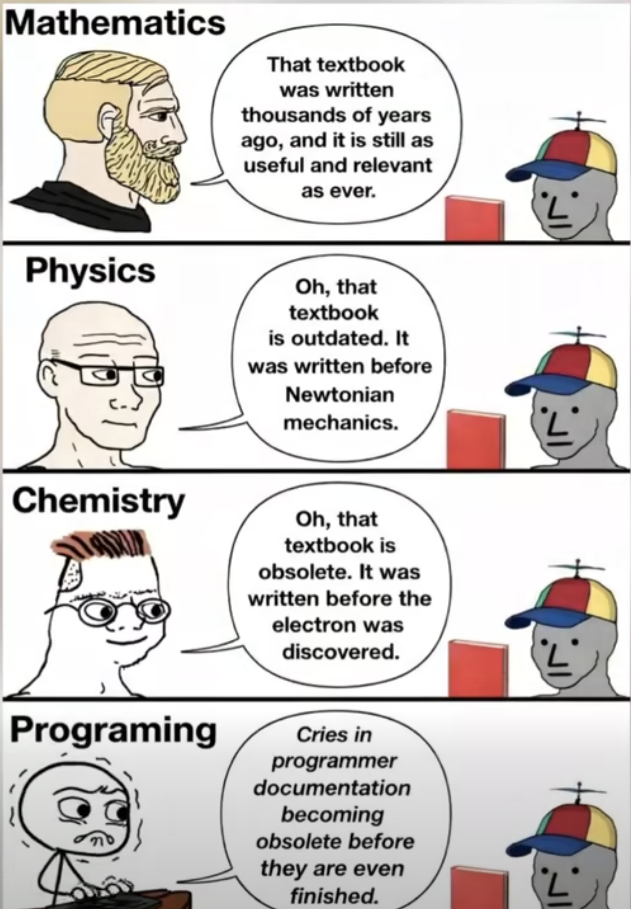
Panta rei!
- We teach you the present
- But your work is in the future
- We might use history to predict the future?
- At least we should learn that things changes constantly!
Terminal
- Don’t rely too heavily on your computers graphical user interface (GUI)
- You know how to use the R console!
- To use a terminal/Unix shell/Bash… is similair
- To navigate the file system is basic practice
- A Unix Terminal is included if you are using Mac (and Linux)
- Emulators are common for Windows (one is included in Git, use that one after installation)
Early computer languages
- ALGOL / ALGOL 60
- Algorithmic Language
- Influential in academic/scientific computing
- Introduced structured programming concepts that shaped later languages
- PL/I
- Used in some government and industrial contexts
- Combined scientific and business computing features (Fortran + Cobol)
General-Purpose Programming Languages
Early statistical computing relied heavily on:
- FORTRAN
- Dominant language for numerical and statistical computation
- Statistical methods implemented as libraries and subroutines
- Still used as numerical back-end (e.g., BLAS/LAPACK) in modern statistical software
- C
- Emerged in the 1970s as a systems programming language
- Widely used for implementing statistical software infrastructure
- Core language of many modern statistical environments (e.g., R, parts of SAS, Stata)
- Often used to interface with high-performance numerical libraries
📌 These languages required substantial programming expertise.
FORTAN is still used in R for subroutines such as least squares. Even in modern packages!
Same for C, such as for lm, which is popular for high performance computing (fast execution time).
Early Statistical Packages
Several dedicated statistical systems emerged:
- SPSS (1968)
- Originally batch-oriented
- Widely used in social sciences
- Originaly “Statistical Package for the Social Sciences”
- BMDP (1960s)
- Bio-Medical Data Package
- Developed at UCLA
- Common in medical statistics
- GENSTAT (1968)
- Focused on agricultural statistics
- MINITAB (1972)
- Designed for teaching and education
- Still popular in quality control
SAS: A Transitional System
- SAS (early 1970s)
- Developed for agricultural and biostatistical analysis
- Script-based, but largely batch-oriented
- Became a standard in:
- Government agencies
- Large organisations
- Known for strong data management capabilities
- Still widely used in pharmaceutical industry
📌 SAS predates S and influenced later statistical workflows.
- Still common to receive data in SAS-format (
data_file.sas7bdat) from register holders! - Sometimes necessary to use SAS to export the data (genAI might be a good aid in those cases)
Limitations of Pre-S Systems
Common limitations included:
- Batch processing rather than interactivity
- But we still sometimes need batch processing for large scale projects!
Rscript script.R
- Separation of data management and analysis
- Limited graphics capabilities
- High barriers to exploratory data analysis
S
- S takes form at Bell Laboratories (interactive statistical computing).
- John Chambers leads the effort.
- 1976: first working version of S runs on GCOS
- 1979: S2 is ported to UNIX; UNIX becomes the primary platform
- 1980: S is first distributed outside Bell Labs
- 1981: source versions are made available
- 1984: key S books published (often called the “Brown Book” era)
The New S Language
- 1988: “New S” is released (major language redesign)
- 1988: S-PLUS is first released as a commercial implementation of S
- Last seen in Tibco Spotfire 2012
- 1991: Statistical Models in S (“White Book”) popularizes formula notation (the
~operator), data frames, and modeling workflows
R
- 1993: first versions of R is published (Auckland; Ross Ihaka & Robert Gentleman)
- 1995: R becomes open source (GPL)
- 1997: the R Core group forms; CRAN is founded (Kurt Hornik)
- 2000: R 1.0.0 is released 2000-02-29

RStudio brings an IDE to the R community
- 2009: RStudio (the company) is founded
- 2011: RStudio IDE is introduced as an open-source IDE for R (desktop + server)
Microsoft (Revolution Analytics)
- Jan 2015: Microsoft announces it will acquire Revolution Analytics
- Microsoft promotes enterprise R offerings (e.g., Microsoft R Open / R Server)
- 2016: SQL Server 2016 introduces R Services (in-database R)
- 2017: Microsoft expands the stack under “Machine Learning Server” branding
- June 2021: Microsoft announces retirement of Microsoft Machine Learning Server
- 2023: Microsoft in still a relevant player
- platinum member of The R consorsium
- Owner of GitHub
- VS Code
RStudio becomes Posit
- July 27, 2022: RStudio rebrands as Posit
- July 28, 2022: Quarto is announced as a next-generation scientific and technical publishing system (multi-language, multi-engine)
- A public benefit company (not only releant for its shareholders)
- Also a platinum member of The R consortium # Modern IDE
Positron
- New generation IDE for data science (and of course statistics!)
- From Posit PBC
- Free for individual use
- Based on Code OSS (open source version of VS Code from Microsoft)
- For both R and Python (Julia?)
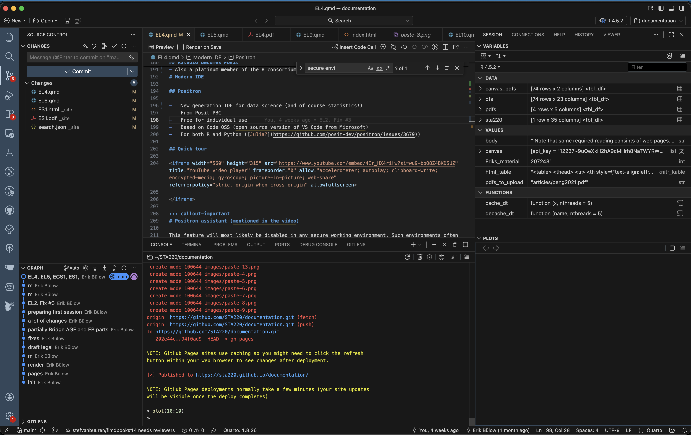
Quick tour
This feature will most likely be disabled in any secure working environment. Such environments often have strict rules about data privacy and security, which may conflict with the assistant’s functionality. Health data in SENSITIVE and SECURE environments must not be shared with external services, including AI assistants, to comply with data protection regulations and institutional policies.
It is recommended to not rely on such tools during the course (even if all our data is synthetic). If you start to rely on such tools, you might get difficulties the day you work with real data (might lead to prosecution for “brott mot tystnadsplikten” which is not only public, but actually civil law (“Brottsbalken”) with prision sentence as a possibility). Society put an extreme emphasis on protecting health data, and rightfully so!
RStudio or Positron
- We will use Positron in this course
- This is for you to learn and see an alternative IDE …
- … and to get used to the fact that you should never stop learning!
- RStudio, however, is still a great tool and it is still developed and maintained.
- You may use both in the future (maybe Positron on your computer but RStudio in a secure server, which tend to be more slowly updated)
Some differences
No package installer (yet). You need to use
pak::pkg_install()orinstall.packages()etc.No inline rendering of results in Quarto documents (yet)
You can use multiple active R sessions at once
Great integrated tools from VS Code and extensions, such as GitHub integration
Version control
Before Version Control Systems
1950s–1970s: Early software development relied on:
- Manual file naming:
analysis_final.fanalysis_final_v2.f
- Physical media:
- Punch cards
- Magnetic tape
- Centralised mainframes
📌 No automated tracking of changes.
Early Version Control Systems
1980s: First-generation tools focused on single files:
- SCCS (Source Code Control System, 1972)
- RCS (Revision Control System, 1982)
Characteristics:
- Versioning per file
- Linear history
- Central storage
Centralised Version Control
1990s: Project-level systems emerge:
- CVS (Concurrent Versions System)
- Subversion (SVN)
Key features:
- Central repository
- Multiple users
- Check-in / check-out model
📌 Still required constant access to the central server.
Limitations of Centralised Systems
Common problems:
- Single point of failure
- Poor support for branching and merging
- Difficult offline work
- Slow operations on large repositories
These limitations became critical for large projects.
Git
- Git was created by Linus Torvalds in 2005
- Original motivation:
- Support Linux kernel development
- Replace proprietary tools
Design principles:
- Distributed architecture
- Fast local operations
- Strong support for branching and merging
Terminal
- Windows: the Git installer comes with a terminal
- Linux/Unix (incl. Mac): use your terminal/Warp
- Terminal pane in RStudio/Positron
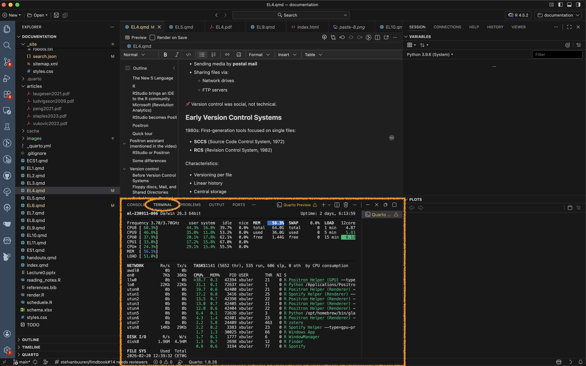
GUI
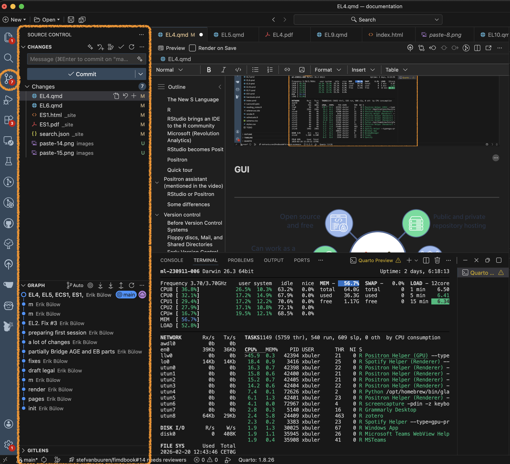
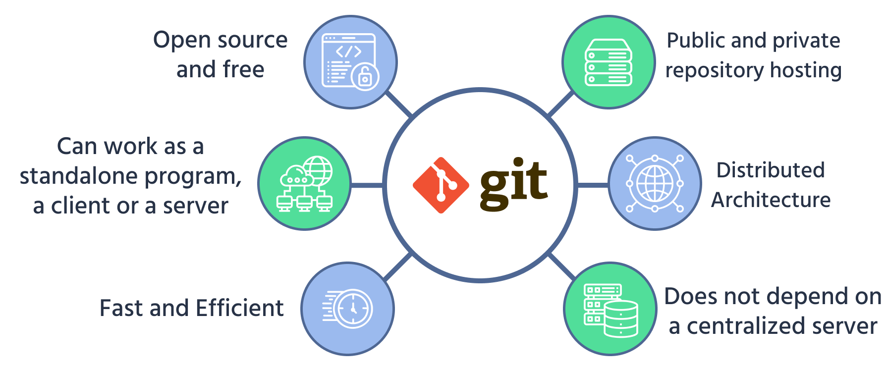
The basics
Some interactive learning tools:
Some basics
You initiate a folder as a git project
Git will track all changes made in that folder
New files
Modified files (especially text, such as programming scripts/functions etc)
Deleted files
Branching
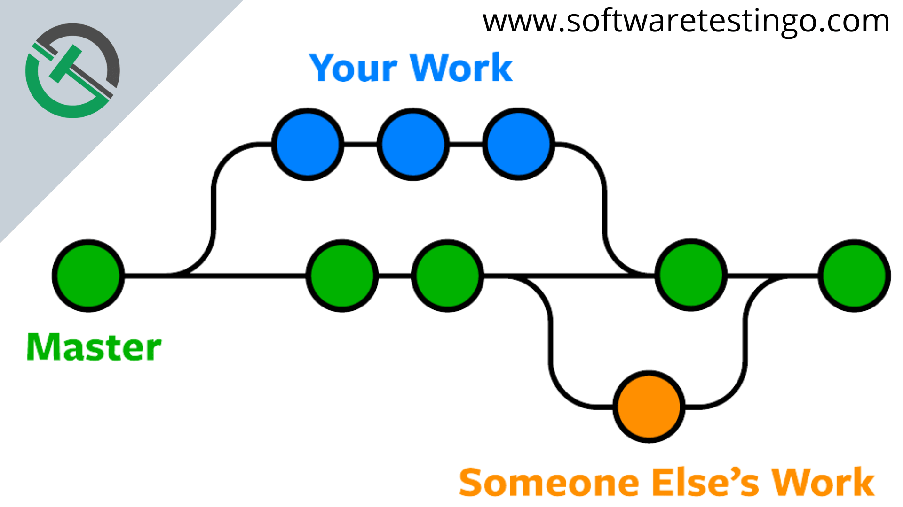
Distributed Version Control with Git
Key ideas in Git:
- Every clone is a full repository (“folder”)
- Local commits without network access
- Cheap and fast branches
- Cryptographic integrity (hash-based)
📌 Collaboration becomes more flexible and robust.
Hosting Platforms
Platforms built around Git:
- GitHub (2008)
- Bitbucket (2008)
- GitLab (2011)
- Gitea - open source alternative to GitHub (get the same functionallity locally or on a server)
They add:
- Pull requests / merge requests (collaboration tools)
- Issue tracking (discussions and bug reports etc)
- Code review
- CI/CD integration (advanced)
Issue tracking
Issue tracking is not part of Git but is implemented in most (if not all) hosting platforms.
Used for bug reports and discussions between developers and users
Issues can be closed when fixed/adressed but are still found in the history
Each issue gets a number (in order) and those can be referenced in commit messages etc (ex:
Fix #37, which will automatically close the issue)
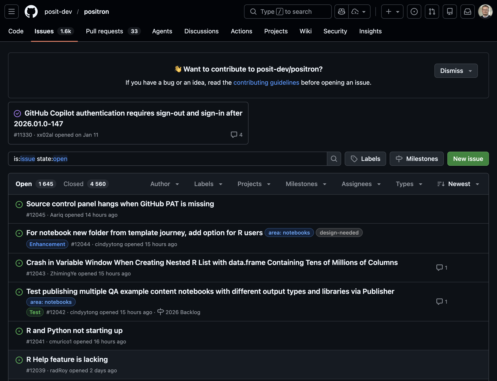
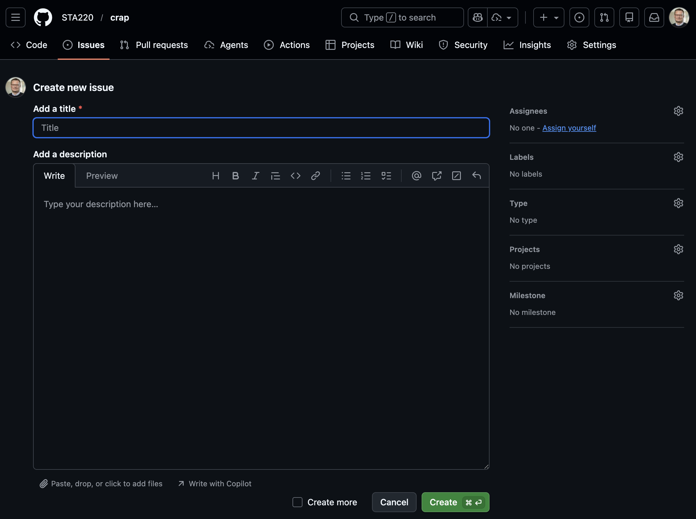
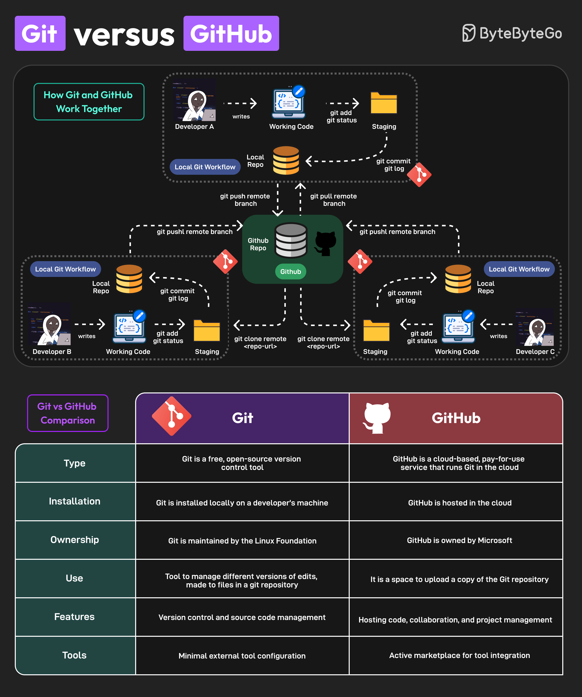
Version Control Today
Modern usage includes:
- Code
- Documentation
- Data analysis (scripts, notebooks)
- Configuration and infrastructure
Git is integrated into:
- IDEs (RStudio, VS Code, Positron)
- CI/CD pipelines
- Cloud platforms
Version Control Beyond Code
Today, version control supports:
- Reproducible research
- Collaborative writing
- Data science workflows
- Teaching and learning
📌 Version control is now a core professional skill.
WARNING!
- Not everything should be shared!
- Scripts and documentation yes!
- But Health data is sensitive!
- Do not share it!
- Avoid unintentional sharing!
- Private repositories are still shared with hosting provider!
- Avoid explicit file paths and sensitive info in scripts!
- Can give information about data location and internal structure!
- No hard-coded passwords or API keys!
Git basics
(After installing the Git software)
- Collect all files related to a project in a folder
- Initialize a git repository in that folder
- Make changes to files
- Stage changes for commit
- Commit changes with a message
- Possibly push commits to remote repository
cd path/to/your/project
git init
git status
## make changes to files
git add filename1 filename2
git commit -m "Descriptive message about changes"
git remote add originVideo tutorials
The video below is a good start to understand the basic concepts of Git and GitHub (and there are others to be found on YouTube).
Inspirational video
Watch this video even though some parts might be overwhelming. It gives a good overview of the current state (2025), even though many things will be too advanced for this course (it is not specifically aimed for statisticians or R users).
The .gitignore file is very important in settings with health data! Pay close attention to this section of the video!
Git in Positron
- Remember that Positron is build on Code OSS (which shares a lot of features with VS Code).
- Branching and merging is possible but we will not cover that here.
Short official introduction from Microsoft:
More detailed introductions. Watch both! The first one is based on a Windows version of VS code and the second on Mac but the concepts are the same:
This video includes some parts which might be overwhelming if you are new to Git and GitHub. Don’t worry! You don’t need to understand everything right away. Just try to follow along with the basic concepts and steps. You will get more comfortable with practice.
Statistics projects
Not a single R script
- Real projects are more complex than a single R script!
- Multiple scripts
- Multiple data files
- Documentation
- Reports
- Version control
- Reproducible workflows
Project structure
Common file structures
- Help you organize your thoughts
- Help others to collaborate
- simplifies paths used in your code
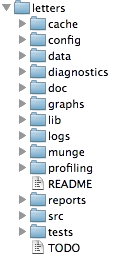
Example structure
/.../my_project/
├── README.md - project documentation
├── TODO - what should be done next?
├── .git - handled by git (hidden folder)
├── .gitignore - used by git but your responsibility!
├── data/ - your data files (not under version control!)
├── cancer.csv
└── patients.qs
├── R/ - your saved R functions
├── function1.R
└── function2.R
├── reports/
└── _targets.R - targets pipeline scriptREADME.md
- Document the purpose of the project
- What is it about?
- What is the aim?
- Who to contact for questions?
- In what circumstances was it created?
Markdown format (simple text with some possible formatting)
data folder
- Store your data files here as they are when you get them
- Avoid any modifications to the raw files!
- It is very easy to forget what you do if it can not be traced by code
- Do NOT include this folder in version control!
- Git is not good at handling large files
- Sensitive data should not be shared!
- Add
data/*to your.gitignorefile - In realistic projects, data might come in varying formats
- csv, txt, xlsx, sas7bdat, sav, dta, etc
- some files might be very big (gigabytes not uncommon)
R folder
- Store your R functions here
- Document their purpose inline!
- Helps you to reuse code
- Easier to read main scripts
- Easier to test and debug code
- Easier to share code between projects
reports folder
- Store your reports here
- Quarto documents
- Documemnt your analysis
- Include figures and tables
- Share with external collaborators
Computer practice
In ECS1 we will use Positron and git/GitHub in action!
Also see the “Reading and practicing” section above for a more in-depth introduction (homework).
What you should know
Reflect on the use of different software and how the rapid development in this field interplay with other important aspects of our field
Be able to describe the principles of basic git commands (init, add, stage, commit, push, pull) and what they are used for (may be theoretical questions in the written exam)
Use Git and GitHub in practice (but you can choose to do it either by commands or the GUI), this will be assessed in computer exercises and a later project.
Similarily, you need to organize your projects according to best practice (but we will be the focus of EL5).
EL5: Reproducibility
- (Nguyen 2022, ch. 2)
- (Baker 2016)
- (Oliveira Andrade 2025)
- (Peng and Hicks 2021)
Reading
- Baker (2016) and Oliveira Andrade (2025) motivates why reproducible analysis is important!
- Peng and Hicks (2021) introduce and elaborate more on the subject.
- Nguyen (2022) only read section “Basic Introduction to Docker and Containers” in chapter 2 (but you do not need to install Docker for this course)
After reading papers like these, one might be tempted to conclude that nothing is trustworthy — not even our own analyses. If every result comes with assumptions, uncertainty, and potential bias, what does trust really mean? Statisticians live in a world of probabilities, but most people prefer certainty.
Reproducibility might sound like a good thing but how much does the technical details matter if we are not allowed to freely share the underlying health care data anyway?
For reference:
Practice
A workshop with 7 parts was given at the R Medicine conference 2025. Practice according to part 1-3 (part 4-7 are slightly outside the scope of the course and only recommended if you have additional time and interest).
Clone this GitHub repo. Exercies are found in the code folder.
Follow the recording from the workshop while you are practicing: The power of {targets} package for reproducible data science
- The full video is close to three hours long, but this includes breaks as well as the more advanced topics that are not mandatory (only the first 92 minutes, which includes several 10 min breaks is mandatory). Nevertheless, it is recommended to watch the full video (just watching part 4-7 for inspirational purposes without doing the exercises and without any expectation to fully grasp all the details).
- RStudio is used in the recording. Please try to use Positron; however, feel free to revert to RStudio this time if following the instructions in one application while working in another feels overwhelming.
- You may recognise some of the material from Part 3, as presented during the lecture
This practice is homework (no dedicated computer session is targeting targets but you should use at least some components of it in a later project, so you should practice the basics now)!
An article about computational science in a scientific publication is not the scholarship itself, it is merely advertising of the scholarship. The actual scholarship is the complete software development environment and the complete set of instructions which generated the figures. / Buckheit & Donoho
[…] importance of having a clear understanding of how data analysis was conducted when critical life and death decisions must be made. / Peng et al. 2021
Reproducible analysis
The definition of reproducible research generally consists of the following elements.
A published data analysis is reproducible if the analytic data sets and the computer code used to create the data analysis are made available to others for independent study and analysis
This is rather vague …
Why is this a problem?
Many, even simple, results depend on a precise record of procedures and processing and the order in which they occur.
Many statistical algorithms have many tuning parameters that can dramatically change the results if they are not inputted exactly the same way as was done by the original investigators.
If any of these myriad details are not properly recorded in the code, then there is a significant possibility that the results produced by others will differ from the original investigators’ results.
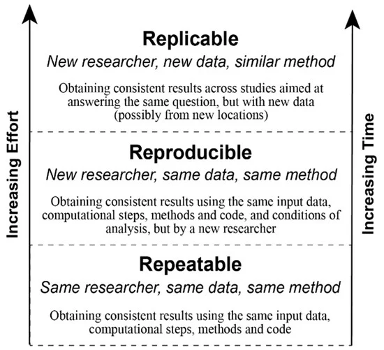
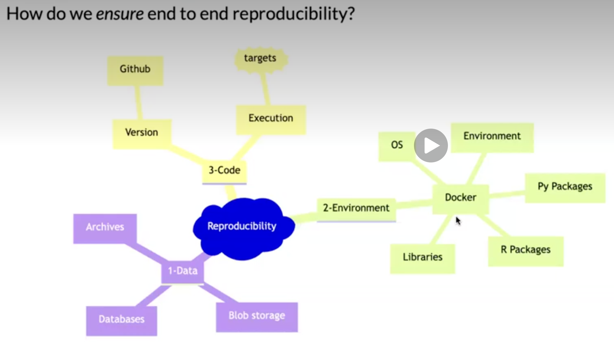
Recap folder structure
/.../my_project/
├── README.md - project documentation
├── TODO - what should be done next?
├── .git - handled by git (hidden folder)
├── .gitignore - used by git but your responsibility!
├── data/ - your data files (not under version control!)
├── cancer.csv
└── patients.qs
├── R/ - your saved R functions
├── function1.R
└── function2.R
├── reports/
└── _targets.R - targets pipeline scriptPipeline
A pipeline is a computational workflow that does statistics, analytics, or data science.
A pipeline contains tasks to prepare datasets, run models, and summarize results for a business deliverable or research paper.
Pipeline tools coordinate the pieces of computationally demanding analysis projects.
Long running processes
- Imaigine you have nice R-scripts to take care of every step in your project
- You have either one very very … very long file or a bunch of files which you execute in order
- It takes two weeks to run all the scripts (not unrealistic for a big project!)
- You report the result to your collaborators
- They ask you to update a tiny detail somewhere in the middle of your workflow
- You need to rerun everything (while you’re screaming in frustration)!
- This will repeat again and again until you finally
- Lose your mind and quit your job
- Adapt a more reproducible workflow
Steps-wise procedure
- The default setting in R is to save the workspace to disk when you end the sesion
- This is usually not recommended and therefore often disabled in for example RStudio
- (If you re-start your sessin at a later point you might have no idea how the restored objects relates to each other.)
- You may still want to execute things in a more step-wise fasion
- Convert big data files to something R-friendly
- Perform some data management (select relevant columns ond rows), cleaning, add calculated variables etc
- Perform some exploratory data analysis (EDA) to get a better understanding of the data
- Perform some statistical analysis
- Report and visualize the results
Caching
- If you perform each step in different script files, you might start each file with some input and end it with some output
- The output from the previous script is used as input in the next script
save()andload()are standard but can be very slow for large objectssaveRDS()andloadRDS()use serialization and are now adays much more efficientqs2::qs_save()andqs2::qs_read()(orqs2::qd_save()andqs2::qd_read()) from the qs2 package are currently “state-of-the-art” (but things tend to change quickly)
Benchmarking
Single-threaded
| Algorithm | Compression | Save Time (s) | Read Time (s) |
|---|---|---|---|
| qs2 | 7.96 | 13.4 | 50.4 |
| qdata | 8.45 | 10.5 | 34.8 |
| base::serialize | 1.1 | 8.87 | 51.4 |
| saveRDS | 8.68 | 107 | 63.7 |
| fst | 2.59 | 5.09 | 46.3 |
| parquet | 8.29 | 20.3 | 38.4 |
| qs (legacy) | 7.97 | 9.13 | 48.1 |
Multi-threaded (8 threads)
| Algorithm | Compression | Save Time (s) | Read Time (s) |
|---|---|---|---|
| qs2 | 7.96 | 3.79 | 48.1 |
| qdata | 8.45 | 1.98 | 33.1 |
| fst | 2.59 | 5.05 | 46.6 |
| parquet | 8.29 | 20.2 | 37.0 |
| qs (legacy) | 7.97 | 3.21 | 52.0 |
qs2,qdataandqswithcompress_level = 3parquetvia thearrowpackage using zstdcompression_level = 3base::serializewithascii = FALSEandxdr = FALSE
Datasets used
1000 genomes non-coding VCF1000 genomes non-coding variants (2743 MB)B-cell dataB-cell mouse data, Greiff 2017 (1057 MB)IP locationIPV4 range data with location information (198 MB)Netflix movie ratingsNetflix ML prediction dataset (571 MB)
These datasets are openly licensed and represent a combination of numeric and text data across multiple domains. See inst/analysis/datasets.R on Github.
Who cares?
- Imagine you work with data for the whole population (> 10 M people)
- You have medical prescription data for everyone and lets say on average 20 prescriptions (since 2015) per person => 10 * 20 = 200 M rows of data
- You are working in a secure environment were data is stored on a network server (no HDD drive)
- The same environment is shared by 20 other researchers and you are all competing for the same band-width
- It will get increasonly frusrating just to load and save the big files
- You might need to wait for half an hour before you can start working
Automated process
- Instead of relying on individual R scripts, use a reproducible pipeline.
- This is common practice in software development
- For example GNU Make is a build automation tool that automatically determines which parts of a program need to be rebuilt and executes the necessary commands based on rules defined in a Makefile.
- Iteration during project development (which is equally relevant for a health data project), will be much faster and reliable.
- Caching as described abowe is automated and you only need to read/write files to disk/network storage when actually needed.
targets package
The
{targets}package is a Make-like pipeline tool for statistics and data science in R.The package skips costly runtime for tasks that are already up to date, orchestrates the necessary computation with implicit parallel computing, and abstracts files as R objects.
If all the current output matches the current upstream code and data, then the whole pipeline is up to date, and the results are more trustworthy than otherwise.
The tasks themselves are called “targets”, and they run the functions and return R objects.
The
targetspackage orchestrates the targets and stores the output objects to make your pipeline efficient, painless, and reproducible.
Example
Data: survey data collected by the US National Center for Health Statistics (NCHS) which has conducted a series of health and nutrition surveys since the early 1960’s. Since 1999 approximately 5,000 individuals of all ages are interviewed in their homes every year and complete the health examination component of the survey. The health examination is conducted in a mobile examination centre (MEC).
Question: Is there any association between gender and BMI?
## pak::pkg_install("NHANES")
str(NHANES::NHANES)R script
A normal R script might look like:
## pak::pkg_install("NHANES")
library(tidyverse)
df <- as_tibble(NHANES::NHANES)
tbl <- count(df, Gender)
tst <- t.test(BMI ~ Gender, df)
gg <- ggplot(df, aes(BMI, color = Gender)) + geom_density()You must run the script in order (but might not always do that) … if so, confusion will arise!
objects df, tbl and tst only lives in the active session
No problem in this example
but working with big and complex data might introduce long-running processes => time consuming!
Results
#| echo: false
gg
tstPipeline
- Define steps in your analysis as targets
- Define dependencies between targets
- Automatically track changes and rerun only necessary parts
Why?
- You do not want to rerun everything all the time!
- You want to keep track of what you have done
- You want to be able to reproduce your results later
- You want to share your workflow with others
target
Reformulate from ordinary object assignment:
df <- as_tibble(NHANES::NHANES)to a target
library(targets)
tar_target(df, as_tibble(NHANES::NHANES))Put all targets in a list
#| results: "hide"
list(
tar_target(df, as_tibble(NHANES::NHANES)),
tar_target(tbl, count(df, Species)),
tar_target(tst, t.test(BMI ~ Gender, df)),
tar_target(gg, {
ggplot(df, aes(BMI, color = Gender)) + geom_density()
})
)_targets.R file
Put that list into a file _targets.R together with some additional code:
#| results: "hide"
library(targets)
tar_source() # Source all scripts with function stored in R folder
tar_option_set(
# Specify all needed packages here
packages = c("tidyverse"),
# Format used for caching (qs or actually qs2 is best for big data)
format = "qs",
# Additional settings ...
seed = 123
)
list(
tar_target(df, as_tibble(NHANES::NHANES)),
tar_target(tbl, count(df, Species)),
tar_target(tst, t.test(BMI ~ Gender, df)),
tar_target(gg, {
ggplot(df, aes(BMI, color = Gender)) + geom_density()
})
)Benefits
- execute the whole project by
tar_make() - intermediate steps are cached and cached objects retreived by
tar_load()ortar_read() - dependency among individual steps can be visualized:
tar_visnetwork()
Dependency graph
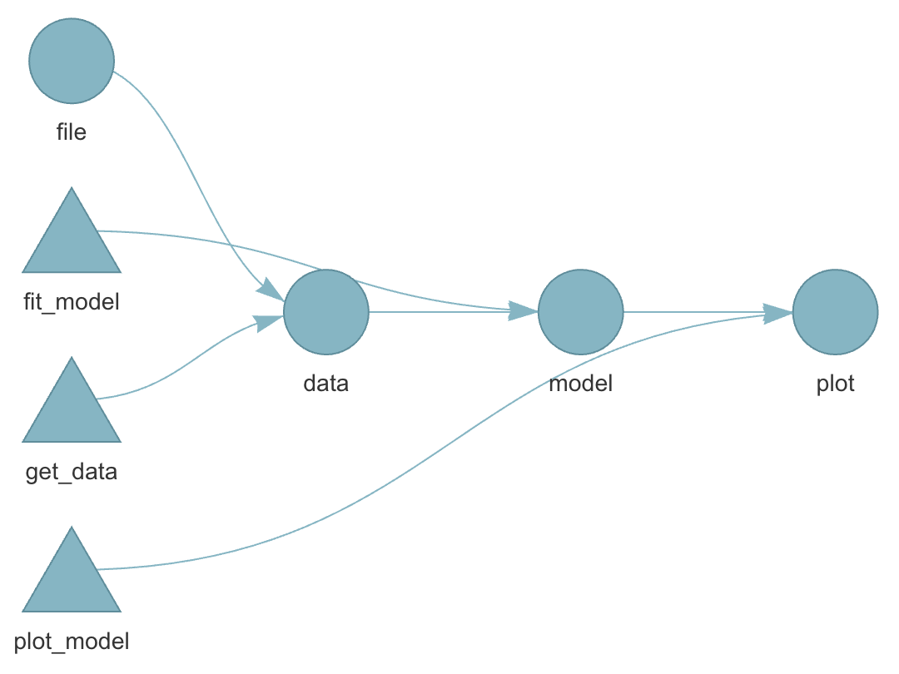
Live show
#| eval: false
cd
git clone https://github.com/STA220/targets.git
cd targets
positron .Or perform those steps from within Positron.
Different R-versions
- Imagine you finish your research project and you submit a manuscript to a journal
- The journal comes back one year later (they didn’t have time until know) and one reviewer ask you to double check some steps of the analysis
- You make some modifications and rerun your pipelines.
- But it doesn’t work!
- Half a year ago you updated your R installation and a week ago all of your installed packages.
- One package was retired from CRAN (could happen even though there was nothing wrong with the package when you used it)
- One package has deprecated one of the functions you previously used
- On package has redesigned the output format from a specific function you used
- 😱
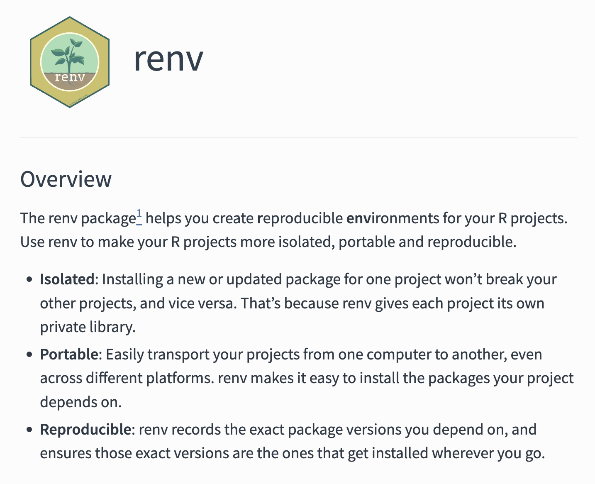
Pros and cons
It is always a good idea to be able to reproduce exactly what you did!
But if you never update you might miss essential bug fixes.
If your results change, how can you know which version was the most accurate?
Best practice to rerun the analysis both with the frozen versions and with the most up-to-date versions of the packages … because you have all the time in the world and nothing more important to do right … 😂
Different operating systems
R should behave similar on different operating systems.
Exceptions nevertheless exist!
parallel::mclapply()behaves differently on Windows compared to Unix-like systems because Windows does not support forked processes.sort(c("ä", "a", "z"))might differ due to locale settings
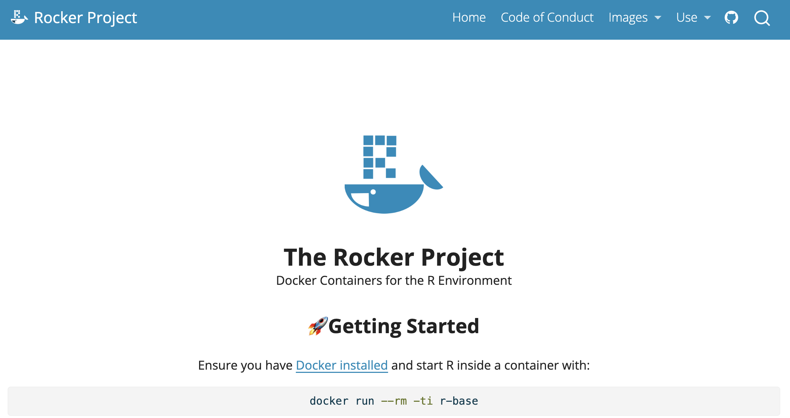
Combining all?
you could very well use both targets + renv + git + GitHub etc
At some point you might start to wonder whether you are a medical statistician or a software developer … and the more complex/esoteric tools you use, the more difficult it might be to collaborate with others
Try to find some middle ground … but always be open to new ideas!
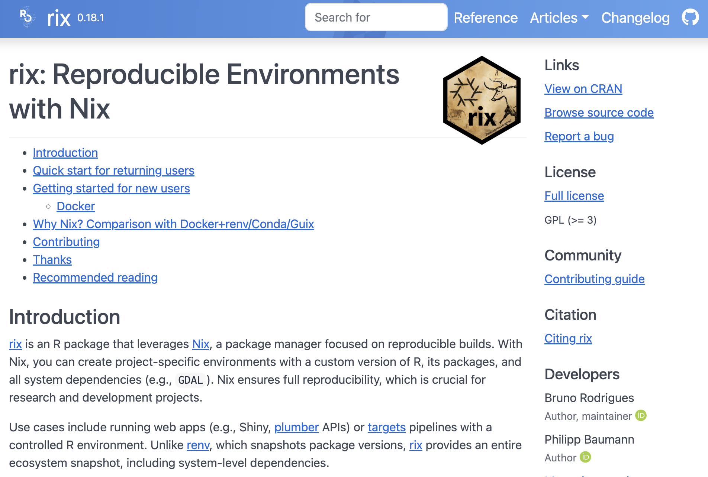
EL6: Standardized vocabularies
- (Nguyen 2022, ch. 3)
Reading
- (Nguyen 2022, ch. 3)
Recommended references:
EL7: Health care registers
- (Nguyen 2022, ch. 4 (5))
- (Nguyen 2022, ch. 4)
- (Nguyen 2022, ch. 5)
Reading
- (Nguyen 2022, ch. 4)
- (Nguyen 2022, ch. 5) Claims data is less commonly used in Sweden but is more important for example in the US where the health care system is more decentralized.
Recommended references:
EL8: Data sources
- (Nguyen 2022, ch. 2)
Reading
- (Nguyen 2022, ch. 2)
- Docker: You should be aware of the concept. Docker is used also for statistical analysis. However, we will not use it for the course.
- Databases: it is important to understand some basic concepts. You might, however, ignore sections about “(Hyper)graph databases”. Try to understand the SQL code even though you might not need to write such code on your own.
Recommended references:
- This might be interesting (but not mandatory) to read: An Introduction to Rocker: Docker Containers for R read.
EL9: Big data
Big data

Biggish data
My definition:
- Only tabular data
- Original data might fit into physical RAM but …
- might be multiplied due to temporary necessity
- physical RAM might be constrained due to other processes/settings
- things might just take too much time … and life is short …
Software
- SAS for big data files from register holders
- R for everything else
- Database?
File format
File storage
- Avoid reading big files over ethernet connection
- data stored on network drive
- Usually faster to first copy file to local SSD drive
fs::file_copy(path, new_path)- (“libuv provides a wide variety of cross-platform sync and async file system operations.”)
- obviously only if “local drive” is also in the (same) secure environment
- work with the project on disk
- move back
- Although not always possble with very large files it seems


sync_project()
- I have a function
sync_project()in my.Rprofileusethis::edit_r_profile()
- However, I don’t include all data files in each individual project
- “Chek out” all files from network storage to disk
- Work with it
- Sync back to allow back-ups and common folder structure
- Git-repo kept for the network storage
#| eval: false
#| echo: true
#| class-output: r
sync_project <- function (from, to)
{
loc_dirs <- c("S:/Projects/", "F:/xbuler/")
loc_dirs_exp <- paste(loc_dirs, collapse = "|")
proj <- gsub(loc_dirs_exp, "", getwd())
locations <- paste0(loc_dirs, proj)
locations_exp <- paste(paste0(locations, "/"), collapse = "|")
stopifnot(getwd() %in% locations)
from <- if (missing(from))
getwd()
to <- if (missing(to))
setdiff(locations, from)
ans <- askYesNo(paste("Sync from:\n ", from, "\n To: \n",
to))
stopifnot(ans)
if (!fs::dir_exists(to)) {
fs::dir_create(to)
message("Target folder did not exist but has been created!")
}
fr <- dplyr::mutate(dplyr::select(fs::dir_info(from, all = TRUE,
recurse = TRUE, regexp = ".git", invert = TRUE), path,
type, size, modification_time), file = gsub(locations_exp,
"", path), path_to = paste(to, file, sep = "/"))
t <- dplyr::mutate(dplyr::select(fs::dir_info(to, all = TRUE,
recurse = TRUE), path, type, size, modification_time),
file = gsub(locations_exp, "", path))
new <- dplyr::anti_join(fr, t, "file")
new_dirs <- dplyr::filter(new, type == "directory")
if (nrow(new_dirs)) {
print(dplyr::select(new_dirs, file), n = Inf)
ans <- askYesNo(paste(nrow(new_dirs), " dir(s) not in 'to'. Should I create these?"))
if (ans)
fs::dir_create(new_dirs$path_to)
}
new_files <- dplyr::filter(new, type == "file")
if (nrow(new_files)) {
print(dplyr::select(new_files, file), n = Inf)
ans <- askYesNo(paste(nrow(new_files), " file(s) not in 'to'. Should I copy them?"))
if (ans)
purrr::walk2(new_files$path, new_files$path_to, fs::file_copy,
.progress = TRUE)
}
diff_mod <- dplyr::filter(dplyr::left_join(fr, t, "file",
suffix = c("_from", "_to")), type_from == "file", modification_time_to !=
modification_time_from)
if (nrow(diff_mod)) {
print(dplyr::select(diff_mod, file, tidyselect::matches("modification_time|size")),
n = Inf)
ans <- askYesNo(paste(nrow(diff_mod), " file(s) have been updated. Should I replace the older version?"))
if (ans) {
purrr::walk2(diff_mod$file, diff_mod$path_to, fs::file_copy,
overwrite = TRUE, .progress = TRUE)
}
}
dlt <- dplyr::filter(dplyr::anti_join(t, fr, "file"), !startsWith(file,
".git"))
if (nrow(dlt)) {
print(dlt, n = Inf)
ans <- askYesNo(paste(nrow(dlt), " file(s) have been deleted in 'from'. Should I delete them in 'to'?"))
if (ans) {
purrr::walk(dlt$path, fs::file_delete, .progress = TRUE)
}
}
}👎 Reading SAS files in R
- Common to get large register files in SAS-format (SoS, SCB)
- 👍 SAS can handle that (files on disk) 😀
- 👎 I am a terrible SAS user 🙁
- 👎 Seems to be no easy way to read only parts of SAS-files into R directly
haven::read_sas()?
haven::read_sas()
- 👍 May work if big enough RAM …
- 👎 Whole file is first read into RAM (
readr::datasource(data_file)) - 👎 Most time spent on
df_parse_sas_file() - (Same for .dta-files [Stata])
#| class-output: r
haven::read_sas👍 Export from SAS to csv
- I use SAS code to export only nececary data to csv
- I might use a prefiltering list exported from R to limit the data
- SAS Viya more flexible (I’ve heard) but not SAS 9.4
- Use
(set=1000)etc for tests and then run over night - csv-files exported to local SSD drive (and then synced back to storage folder)
ChatGPT
Jag har exporterat en csv-fil från R som innehåller en lista med löpnummer på individer. Jag vill nu använda SAS. Först vill jag läsa in CSV-filen. Sedan vill jag filtrera ett dataset i SAS (vi kan kalla det pelle) som har en kolumn med samma löpnummer som i CSV-filen (jag vill bara ha med de fall där det finns en match). Därefter vill jag exportera resultatet till en ny csv-fil. Jag vill att detta ska ske på ett effektivt och snabbt sätt. Hjälp med med SAS-syntax för detta
#| classes: output-highlight
#| class-output: sas
#| echo: true
#| eval: false
/* Läs in CSV-filen i SAS */
/* Läs in filen med löpnummer till ett SAS-dataset (vi kallar det `individer`) */
proc import datafile="din_sökväg_till_csv_filen.csv"
out=individer>
dbms=csv
replace;
getnames=yes; /* Sätt till no om csv-filen saknar rubriker */
run;
/* Om CSV-filen saknar rubrik kan du lägga till följande steg för att namnge kolumnen manuellt */
data individer;
set individer(rename=(var1=löpnummer)); /* Byt "var1" till korrekt variabelnamn */
run;
/* Filtrera datasetet `pelle` baserat på löpnummer */
/* Vi använder en hash-lookup för att göra filtreringen effektiv. Hash-lookup är snabbare än traditionella merge-metoder. */
data pelle_filtered;
if _n_ = 1 then do;
declare hash h(dataset: "individer");
h.definekey("löpnummer");
h.definedone();
end;
set pelle;
if h.find() = 0; /* Endast matchande löpnummer */
run;
/* Exportera det filtrerade datasetet till en ny CSV-fil */
/* Använd proc export för att spara resultatet */
proc export data=pelle_filtered
outfile="din_sökväg_till_ny_csv_fil.csv"
dbms=csv
replace;
run;
/* Effektivitetsoptimering:
Om både `individer` och `pelle` är mycket stora,
kan du sortera båda och använda data step merge
istället för hash-lookup. Hash-metoden är dock
generellt snabbare om det är många rader i båda
tabellerna. */IDE
- RStudio displays object info from the global environment
- This is inefficient for big data
- Whole session can hang and/or crash
- I recommend Positron
- Optimezed
View()pane etc - Active and enthusiastic development
- Optimezed
- Sometimes needed to ditch the IDE completely (even RGui)
- Run R from the terminal


From csv to R
data.table::fread()is super good as long as the data can fit into RAM- If necessary pre-process by
awk
- If necessary pre-process by
{vroom}useALTREPand might be faster for character data- Both
data.table::fread()and{vroom}are multithreaded butvroomhas lazy evaluation (good and bad) arrow::open_csv_dataset()can be good (if data does not fit into RAM but I prefer.parquetteif so)


ALTREP?
- ALTernative REPresentation of R Objects
- Since R version 3.5.0
- Applies to the C-level representation of R objects under the hood
- Used by some base R packages/functions + specialized packages
allow vector data to be in a memory-mapped file; distributed, e.g. within Apache Spark or Hadoop; shared with other applications, e.g. with Apache Arrow; allow compact representation of arithmetic sequences; allow adding meta-data to objects; allow computations/allocations to be deferred; support alternative representations of environments.
Database?
Database?
- I don’t want to administer Microsoft SQL Server myself!
- (They had R support for a couple of years but not any more)
- SQLight is easy to use …
- but (as SQL server) it is row based 🙁
- Some complicated ones are column based 😀 (Snowflake, Google Big Query)
- … but I don’t want to administer those either …
- DuckDB comes for rescue!
Never forget to set proper indices if needed!

DuckDB
- Free and open source (backed by foundation)
- Column based
- Very easy to set up
- Very efficient!
- Integration with tidyverse in R
- Can be used both with disk data and data in RAM
- … but I had some bad experience and now I am scared 😢
From CSV to Parquet
- CSV is not very nice 🙁
- No meta data
- Sensitive to errors (missing values, decimal point, numbers with leading 0 etc, although
freadcan take care of this) - Encoding, BOM, whatever …
- Write to Parquet files
- I don’t think it is possible to convert csv to parquett on disk (first read csv, then write parquette)
- But it can be done in chunks (read portion of csv and write to individual parquet file which are later “combined”)

Parquet
- From Apache Arrow
- Open format
- flat files with possible hierarchical structure by transparent structure of folders and filenames
- Integrates with DuckDB (which integrates with R/tidyverse)
- See example later!
R specific data files?
- I use
.qd-files (previously.qs) to cache non-tabular or intermediate data objects
{qs2}: a framework for efficient serialization … The qs2 format directly uses R serialization (via the R_Serialize/R_Unserialize C API) while improving underlying compression and disk IO patterns.
.RDatais terribly slow!.rdsshould now be much faster than before (serialized).fstmight be better in some cases but.qd/.qsis more generic (I think)

Data management

- Let’s say data fits into RAM
- base R and tidyverse works … but might be terribly slow …
{data.table}! 😀

{data.table}
- Share basic properties with data frames (
dt[i, j]; merge()) - Print method inspired by
{tibble} - Some old friends from
{reshape2}: melt(), dcast() - Has been around since 2006 (stable and well used, older than tidyverse)
- faster alternatives to base:
fifelse(), fcase(), forder(), fread(), fcoalesce(), as.IDate(), %chin% - C and GForce (some difficulties on Mac …)
- integer based keys and indices (compare data bases)
- Reference semantics (no need to copy on modification)
- Very flexible and compact (but perhaps unusual) syntax
Example
#| echo: true
library(data.table)
dt <- iris
setDT(dt)
setkey(iris)
iris
dt[, .N, Species]
dt[, date := as.IDate(Sys.Date()) + .GRP, Species][]
dt[, names(.SD) := lapply(.SD, as.character), .SDcols = is.factor][]
If it doesn’t fit?
- Connect to parquet file.
- Use DuckDB to process the data (while still on disk)
- Use
{dplyr}to translate its syntax into SQL code - Process data on disk
- Only read the results into memory
Example
#| echo: true
#| eval: false
library(tidyverse)
db1 <-
arrow::open_dataset("file1.parquet") |>
arrow::to_duckdb() |>
select(col1:col3) |>
filter(...) |>
pivot_wider(..)
db2 <-
arrow::open_dataset("file2.parquet") |>
arrow::to_duckdb() |>
count(x, y) |>
filter(...)
df <-
db1 |>
left_join(db2) |>
collect() # Only the resulting part should be collected!
Pros 👍
- Lazy: nothing evaluated until it is actually needed (collected)
- Many basic functions are translated from R to SQL
- DuckDB is parallelized (
{data.table}is mostly sequential) - Familiar syntax from tidyverse
Cons 👎
- tidyverse -> SQL translation not perfect (non optimized)
- might be relatively slow if intermediate steps are not cached and needs to be performed repeatedly

DuckPlyr
- New package with API-calls to DuckDB (no standard SQL code in between … I think)
- Drop-in-replacement of {dplyr}
- Automatically fail-safe to collect and use standard {dplyr} if needed
- Uptimized engine to not touch more data than necessary!
- Although very limited functionality so far (but wait and see!)
#| eval: false
#| echo: true
out <-
palmerpenguins::penguins %>%
# CAVEAT: factor columns are not supported yet
mutate(across(where(is.factor), as.character)) %>%
duckplyr::as_duckplyr_tibble() %>%
mutate(bill_area = bill_length_mm * bill_depth_mm) %>%
summarize(.by = c(species, sex), mean_bill_area = mean(bill_area)) %>%
filter(species != "Gentoo")
out %>%
explain()#> ┌---------------------------┐
#> │ ORDER_BY │
#> │ -------------------- │
#> │ dataframe_42_42 │
#> │ 42.___row_number ASC │
#> └-------------┬-------------┘
#> ┌-------------┴-------------┐
#> │ FILTER │
#> │ -------------------- │
#> │ "r_base::!="(species, │
#> │ 'Gentoo') │
#> │ │
#> │ ~34 Rows │
#> └-------------┬-------------┘
#> ┌-------------┴-------------┐
#> │ PROJECTION │
#> │ -------------------- │
#> │ #0 │
#> │ #1 │
#> │ #2 │
#> │ #3 │
#> │ │
#> │ ~172 Rows │
#> └-------------┬-------------┘
#> ┌-------------┴-------------┐
#> │ STREAMING_WINDOW │
#> │ -------------------- │
#> │ Projections: │
#> │ ROW_NUMBER() OVER () │
#> └-------------┬-------------┘
#> ┌-------------┴-------------┐
#> │ ORDER_BY │
#> │ -------------------- │
#> │ dataframe_42_42 │
#> │ 42.___row_number ASC │
#> └-------------┬-------------┘
#> ┌-------------┴-------------┐
#> │ HASH_GROUP_BY │
#> │ -------------------- │
#> │ Groups: │
#> │ #0 │
#> │ #1 │
#> │ │
#> │ Aggregates: │
#> │ min(#2) │
#> │ mean(#3) │
#> │ │
#> │ ~172 Rows │
#> └-------------┬-------------┘
#> ┌-------------┴-------------┐
#> │ PROJECTION │
#> │ -------------------- │
#> │ species │
#> │ sex │
#> │ ___row_number │
#> │ bill_area │
#> │ │
#> │ ~344 Rows │
#> └-------------┬-------------┘
#> ┌-------------┴-------------┐
#> │ PROJECTION │
#> │ -------------------- │
#> │ #0 │
#> │ #1 │
#> │ #2 │
#> │ #3 │
#> │ │
#> │ ~344 Rows │
#> └-------------┬-------------┘
#> ┌-------------┴-------------┐
#> │ STREAMING_WINDOW │
#> │ -------------------- │
#> │ Projections: │
#> │ ROW_NUMBER() OVER () │
#> └-------------┬-------------┘
#> ┌-------------┴-------------┐
#> │ PROJECTION │
#> │ -------------------- │
#> │ species │
#> │ sex │
#> │ bill_area │
#> │ │
#> │ ~344 Rows │
#> └-------------┬-------------┘
#> ┌-------------┴-------------┐
#> │ R_DATAFRAME_SCAN │
#> │ -------------------- │
#> │ data.frame │
#> │ │
#> │ Projections: │
#> │ species │
#> │ bill_length_mm │
#> │ bill_depth_mm │
#> │ sex │
#> │ │
#> │ ~344 Rows │
#> └---------------------------┘
Dates
- Use
as.IDate()instead ofas.Date()if using{data.table}. Integer based. - Use
{anytime}(or maybe{fasttime}) if conversion is needed (ALTREP)
String manipulation
- Character manipulation in base R can be quite slow (does not use
ALTREPand only single core by default)- For example regular expressions (
grep(),gsub()etc)
- For example regular expressions (
{stringfish}use multithreads and ALTREP - much faster!

Paralellization

Paralellization
- R is single threaded by default
- Some packages and functions may use multithreading by default
- Some functions might have arguments such as
nthreads,ncoresetc - To handle multicore/thread computations can be (very) difficult (I’ve heard)
- Easy if data can be divided and conquered (split-apply-combine)
{futureverse}is my favorite (Henrik Bengtsson){furrr}is a a drop-in replacement for{purrr}
{furrr}
#| echo: true
## How many cores do we have?
parallel::detectCores()
library(furrr)
## Save at least one for OS etc
plan(multisession, workers = parallel::detectCores() - 1)
1:10 |>
future_map(rnorm, n = 10, .options = furrr_options(seed = 123)) |>
future_map_dbl(mean){mirai}
- Suposed to be up to 1,000 times “faster” compared to
{furrr}(according to some metric …) - should not block the main process while executing (haven’t tried)
Designed for simplicity, a ‘mirai’ evaluates an R expression asynchronously in a parallel process, locally or distributed over the network, with the result automatically available upon completion.
#| eval: false
#| echo: true
library(mirai)
daemons(11, dispatcher = "thread") # "thread" still experimental
## data.table with 1 billion rows:
dt <- data.table(x = seq_len(1e9), y = rnorm(1e9))
## row sums (row wise )
mirai_map(dt, sum)[.flat]
Note
- Data must be copied for each paralell worker
- If all data is needed for each worker, it will be multiplied in memory
- This might not be possible for big data
- It also takes time
- Hence, there is no guarantee that the over all time will decrease
- Often a tradeof between no of workers/threads/deamons/cores and efficiency etc
- “Standard” computations in
{data.table}is optimized for single core - Message handling and progress bar etc is complicated
Caching
I use
{ProjectTemplate}to organize R projects into different stepsIt has an inbuilt cache mechanism through
ProjectTemplate::cache()I have my own cache-functions in my
.Rprofile
#| echo: true
## OBS kollar inte att det verkligen finns cache-folder etc
cache_dt <- function(x, name = deparse(substitute(x)), nthreads = 5) {
qs2::qd_save(x, glue::glue("cache/{name}.qd"), nthreads = nthreads)
invisible(x)
}
decache_dt <- function(name, nthreads = 5) {
x <- qs2::qd_read(glue::glue("cache/{name}.qd"), TRUE, nthreads = nthreads)
if (data.table::is.data.table(x)) {
data.table::setDT(x)
}
assign(name, x, envir = .GlobalEnv)
invisible(x)
}
Intermediate caching
For long running function calls (hours, days)
Divide task into smaller pieces and execute each part in paralell if feasable
Use wrapper function with some index/grouping variable to indicate which part is currently processed
Cache intermediate object as soon as possible (with name based on the grouping variable)
If process is disrupted and must be restarted, parts which are already executed are just retrieved from from cache
#| echo: true
cache_wrapper <- function(dt_part, name, ...) {
if (fs::file_exists(glue::glue("cache/{name}.qd"))) {
decache_dt(name)
} else {
x <- do_what_should_be_done()
cache_dt(x, name, ...)
x
}
}Profiling
- First version of R script might be inneficient
- Optimazation is difficult
- Might be suboptimal if made ad hoc
{profvis}visualise time and memory usage for each step- improve the most important step first
- For example change
{base}and{tidyverse}code to{data.table} - set keys
- Efficient handling of dates and strings
- For example change
- itterate
- Integrated in RStudio (but not yet Positron)

Modify packages
Modify packages
- Functions from packages might be inefficient
- Profile those as well
- Clone package from GitHub if available or download source code from CRAN
- Improve
- Just load the modified function in global environment
- might need to modify internal calls to
:::-accesed functions
- might need to modify internal calls to
- Or rebuild/install the package if more convenient
If you find ways to improve a package, the maintainer might be eager to hear! Suggest pull request or open GitHub issue!
C-code changes
- If the package use C-code it is probably already very fast
- If not, and you can fix it, the package must be re-compiled
- OS dependent
- Might be tricky if using restricted environments (TRE?)
- Can still be done by rhub (might need to change maintainer-e-mail temporarily)


EL10: Reporting, presentation
NA
EL11: Repetition
NA
Complete Reading list
Articles might be obtained through the GU library (UB) or as PDF files uploaded to Canvas .